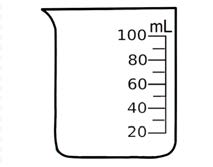

Standard tools for measuring volume
Standard tools for measuring volume give exact values. These tools include beakers, cylinders and bottles. The following picture shows some of the standard tools used for measuring volume.
Tool
Name

Beaker